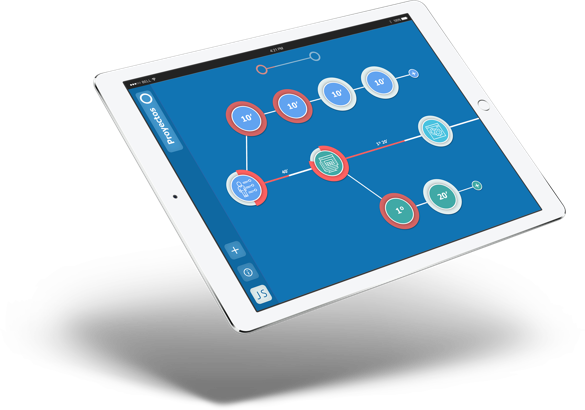
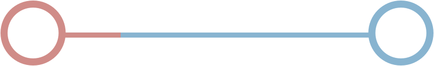

Deje a un lado las hojas de cálculo sin actualizar, las notas rápidas y el software inadecuado para gestionar sus proyectos. Boole le deja ver todo sobre su proyecto de un solo vistazo.
Regístrese. ¡Es gratis!Esta es nuestra linea de Boole. Es una linea para visualizar los tiempos de tu proyecto.
Verá todo sobre su proyecto con tan solo echar un vistazo al la linea, y todo se actualiza en tiempo real. No hay nada que configurar y todo el mundo lo obtiene al instante.
Boole posee herramientas intuitivas e interactivas para visualizar los tiempos totales de su proyecto. Planifica proyectos, realiza el seguimiento del estado y colabora con otros usuarios fácilmente desde prácticamente cualquier lugar.
© Copyright 2017, Boole, Inc. Todos los derechos reservados.